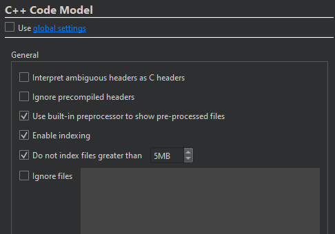

Configure C++ code model
The code model offers services such as code completion, syntactic and semantic highlighting, and diagnostics.
To configure the C++ code model for a project:
- Go to Projects > Project Settings > C++ Code Model.

- Clear Use global settings.
- Set C++ Code Model settings for the project.
See also Code Model.